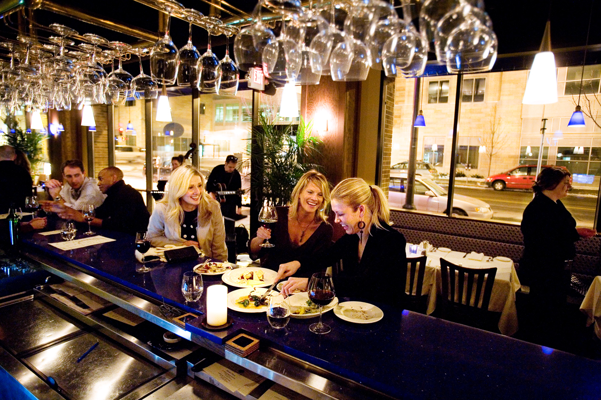

Willie's Wine Bar & Cuisine
Willie's Reimagined - Basic JavaScript Version

Willie's Reimagined - Basic JavaScript Version
Willie’s Wine Bar & Cuisine was a delightful bar and restaurant located in the Loring Park neighborhood of downtown Minneapolis, MN. My wife at the time was the owner and it was her passion project. It operated from 2006-2007. Unfortunately, the location did not generate as much traffic as hoped for and was forced to close even though those who found it raved about it.
There was a simple brochure-style website at the time, but it was not anything like what modern restaurants use. This project is my reimaging what the site might look like if Willie’s was around today. Whenever possible, I used actual photos that were taken at the time.
From a technical perspective, the purpose of this project was to demonstrate my ability to develop a commercial website using HTML5, CSS3, and JavaScript. A template from Colorlib was the initial inspiration for the project. I also used the following JavaScript code libraries/plug-ins: